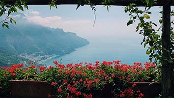
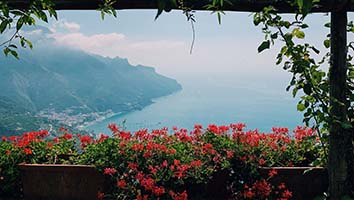

火精靈主題區
意涵
【熱情】
指標性原創音樂節品牌「寧韻音樂節」，展開全新年度升級版演出計劃「2021寧韻音樂節．築景」。體驗以流行音樂、嘻哈音樂與世界音樂三種不同類型的聽覺饗宴，將為所有觀眾打造一場難忘又浪漫的音樂之旅！
意涵
【樂活】
樂活族又稱樂活生活、洛哈思主義、樂活，是一個西方傳來的新興生活型態族群，是由音譯LOHAS而來。雖然樂活族是以美國人為主的族群定義，但目前在全世界引起了不少報導，普遍認為各種文化和國家中都多多少少有樂活族的存在。因為它適合目前的有機食品工業，和消費性文化觀光產業等的推動。另一個與樂活族相關的慢食運動也有異曲同工之妙，慢食運動在於反快餐食品的不健康成份與製造過程。目前這兩股生活型態的趨勢都持續的在進行，而簡樸生活則是在樂活族之前較早被提出的，簡稱為LOVOS，它主要在於對抗消費至上的奢華主義，從行銷觀點看來，簡樸世代的特色較少也較不明顯，但未來的潛力是相當被期待的。
主題
【都市音樂】
如果做一個最佳都市專輯的列表，可能會選嘻哈街頭羅曼史質感與流行音樂明顯不同，不少歌曲甚至還流淌著摩城的血液，但它卻比大部分趕上潮流的同僚們在商業反響上更加成功，其重要原因不是有多獨一無二，相反中明顯限制其使用，只是更加正視生活的起落，做自己成功的嘗試，擁抱下流行趨勢的同時，找回最適合自己的音樂表達方式，認為自己徹底解放。
主題
【都市熱島-植栽篇】
綠地對環境的降溫效果，主來自植物葉面蒸散及本身遮蔽等機制所產生的效應。蒸散作用如同水的蒸發，植物透過氣孔開閉讓水氣以潛熱(latent heat)的方式散失帶走熱能。而遮蔽作用主要由於葉面吸收、反射太陽輻射，使其下之地表面受照射減少而有較低的表面溫度，同時亦使得其上之氣溫因此而降低。


聚集場所
打造活動空間，街頭藝人能自由發揮創作。
牆面、屋頂綠化
植物通過增加建築的覆蓋層降低其表面溫度，因而降低室內溫度，減少空調使用率。綠色植物枝葉及其基層能削弱聲波，同時植物表面的氣孔和絨毛及基質布等能吸收聲音。除此之外，不但能吸收PM10 、二氧化碳來凈化空氣。
綠化屋頂是指建築物的屋頂被部分或完全覆蓋著植被，生長介質，和埋下一層防水膜。它也可以包括附加層，例如一個根屏障和排水和灌溉系統。屋頂上的容器花園，植物保存在盆中，通常不被認為是真正的綠色屋頂，儘管這是有爭議的。 屋頂池塘是用於處理灰水的另一種綠色屋頂。 植被，土壤，排水層，屋頂屏障和灌溉系統構成綠色屋頂。綠化屋頂也是低影響開發或海綿城市的一種技術措施。
都市熱島-植栽篇
 涼爽
蒸散作用
無植栽
吸音
聲波
炎熱
涼爽
蒸散作用
無植栽
吸音
聲波
炎熱
花卉設計
花卉學或稱花卉栽培(Floriculture)是農業之一分支，歸在園藝學(Horticulture)部門裏。而園藝學是包括生產果樹、蔬菜、造園及花卉用之觀賞植物等。按歐美各國，把花卉作物歸納成四大類。(一)切花、切枝及切葉(Cut flowers and greens)：如香石竹、菊花、玫瑰、唐菖蒲、蕨葉及各種切枝等；(二)盆花(Flowering pot plants)：如非洲菫、盆菊、杜鵑花、聖誕紅等；(三)觀葉植物(Foliage plants)：盆栽或吊籃用之各種觀葉植物，以配合室內造景佈置之用；(四)花壇植物(Bedding plants)：如天竺葵、矮牽牛、非洲鳳仙花、四季秋海棠等花苗及各種住家種植之菜苗。
在台灣和日本凡是生產觀賞植物(Ornamental plants)，都可歸入花卉作物，所以常造園觀賞植物(Landscape ornamental plants, 即Ornamental horticulture)亦併入花卉觀賞植物(Flowers and ornamental plants)中，範圍較廣。依台灣省農林廳所出之「農業年報」，花卉包括切花類、球根類、種子類、苗圃類和盆花類。

 
